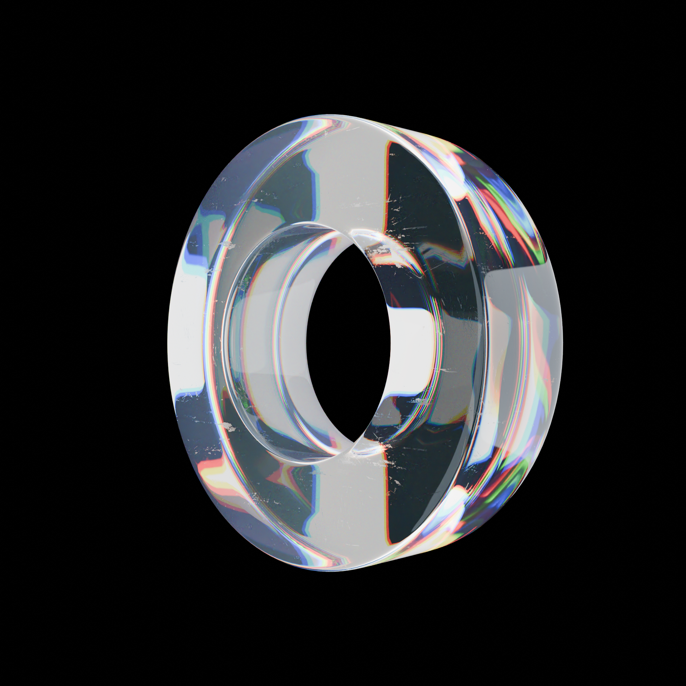
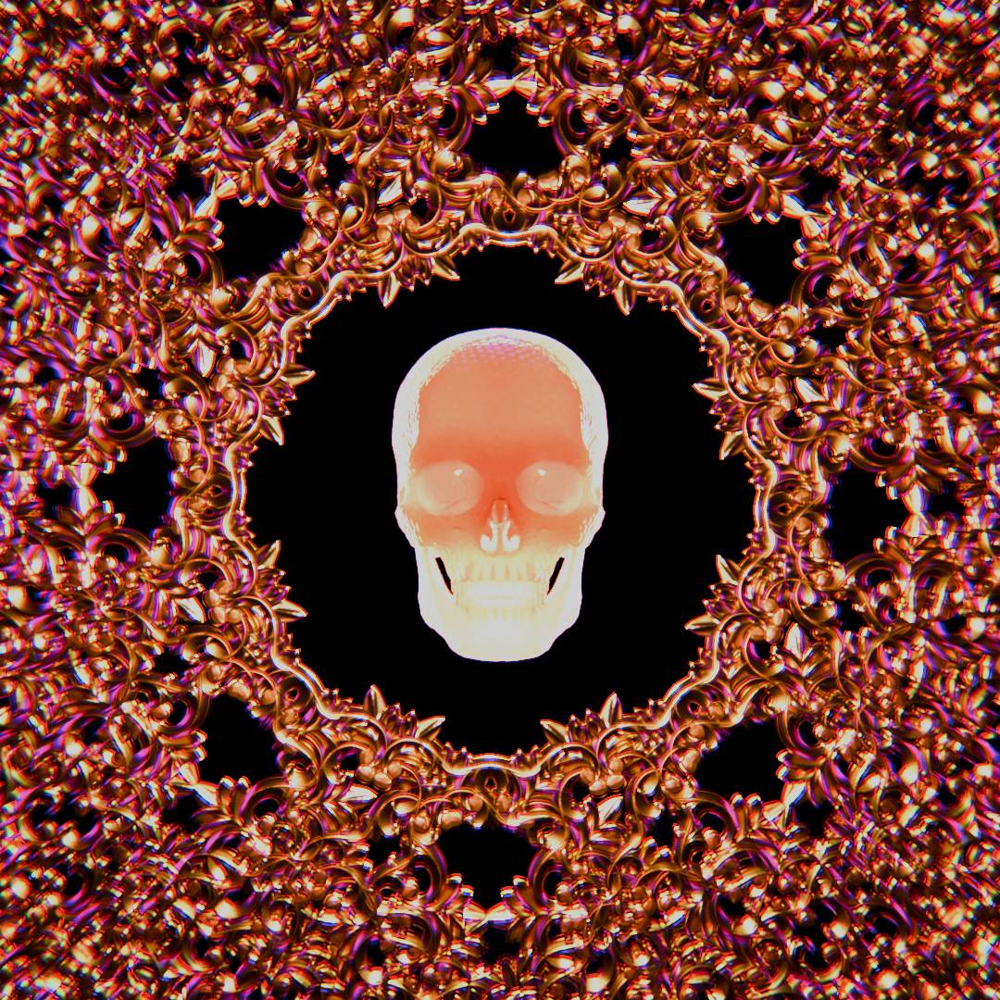
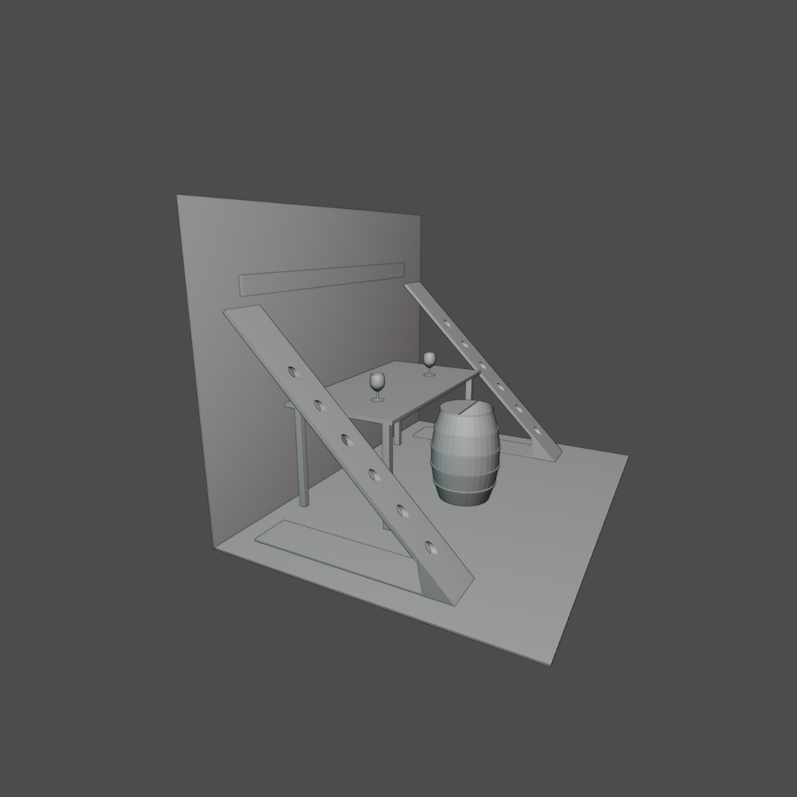

¿QUIÉN SOY?
Hola, mi nombre es Elias Gabriel Bareiro Quevedo y soy un estudiante en Diseño Multimedial en la Facultad de Artes de la UNLP. Estoy comprometido con las prácticas artísticas, busco oportunidades para poder expresarme con conformidad y contribuir a un mundo mejor.
Me entusiasma aprender, por lo que mis conocimientos son ampliamente variados.
MIS CONOCIMIENTOS
En cuanto a mis conocimientos: empezando por los idiomas, puedo comunicarme y comprender fluidamente el inglés. Respaldado con un examen de Inglés de ASCI de nivel B1 y más de 1 año trabajando en atención al público en lugares de mucho turismo extrangero.
En el ámbito informático conozco los lenguajes de programación web html5, css y un poco javascript. También, y gracias a la carrera, conozco processing, p5js y recientemente Script.
Ahora bien, donde mas me destaco es en el diseño, con conocimientos en figma, canva y miro para diseños y planeamiento de páginas web y de aplicaciones móviles; aseprite, krita, Adobe Illustrator para ilustraciones y animaciones 2D creativas; OBS studio y DaVinci resolve para la grabación, transmisiones en vivo y edición de videos; godot en el desarrollo de videojuegos y experiencias interactivas o reactivas; photoshop en la edición de fotos y renders finales; y por último, me especializo en Blender 3D para creación de modelos, escenarios y animaciones 3D, creación de texturas y rigging de personajes 3D.
MIS TRABAJOS





